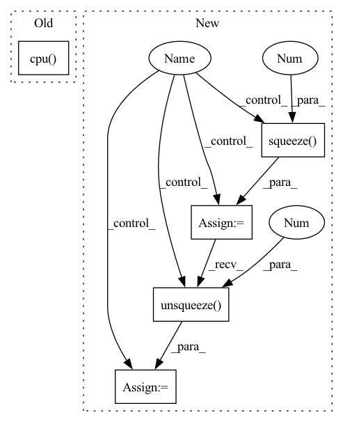

Pattern ID :35744
Before Change
if (self.add_noise) and (self.noise_kind is not None) and (self.noise_amplitude is not None):
// Generate spectral noise
container_wav = isdct_torch(container.squeeze(0).squeeze(0), frame_length=4096, frame_step=62, window=torch.hamming_window).cpu()
noise = add_noise(container_wav, self.noise_kind, self.noise_amplitude).type(torch.float32)
spectral_noise = sdct_torch(noise, frame_length=4096, frame_step=62).unsqueeze(0).cuda()
// Add noise in frequency
corrupted_container = container + spectral_noiseAfter Change
// Reveal image
revealed = self.RN(corrupted_container)
else:
if self.switch :
// Switch domain and back
container_wav = isdct_torch(
container.squeeze(0).squeeze(0 ) ,
frame_length=self.frame_length,
frame_step=self.frame_step,
window=torch.hamming_window
)
container = sdct_torch(
container_wav,
frame_length=self.frame_length,
frame_step=self.frame_step
).unsqueeze(0).unsqueeze(0 )
// Reveal image
revealed = self.RN(container)
In pattern: SUPERPATTERN
Frequency: 3
Non-data size: 5
Instances Fragment ID: 101650381
Project Name: margaritageleta/pixinwav
Commit Name: 921dae69cc45996690b800761202a4c3b8e49f7e
Time: 2021-03-11
Author: noticiasmundiales99@gmail.com
File Name: src/umodel_rgb_shuffle.py
M Class Name: StegoUNet
N Class Name: StegoUNet
M Method Name: forward(3)
N Method Name: forward(3)
M Parent Class: nn.Module
N Parent Class: nn.Module
M File Name: src/umodel_rgb_shuffle.py
N File Name: src/umodel_rgb_shuffle.py
M Start Line: 183
M End Line: 183
N Start Line: 198
N End Line: 241
Before Change
container_2x = sdct_torch(container_wav, frame_length=4096, frame_step=62, window=torch.hamming_window).unsqueeze(0).unsqueeze(0)
loss, loss_cover, loss_secret, loss_spectrum = StegoLoss(secrets, covers, containers, container_2x, revealed, beta)
snr_audio = SNR(covers.cpu(), containers.cpu() )
psnr_image = PSNR(secrets, revealed)
ssim_image = ssim(secrets, revealed)
dtw_loss = softDTW(original_wav.cpu().unsqueeze(0), container_wav.cpu().unsqueeze(0))After Change
train_loss, train_loss_cover, train_loss_secret, train_loss_spectrum, snr, psnr, ssim_secret, train_dtw_loss = [], [], [], [], [], [], [], []
vd_loss, vd_loss_cover, vd_loss_secret, vd_snr, vd_psnr, vd_ssim, vd_dtw = [], [], [], [], [], [], []
for i, data in enumerate(tr_loader):
if prev_i != None and i < prev_i - 1: continue // Checkpoint pass
secrets, covers = data[0].to(device), data[1].to(device)
if transform == "fourier": phase = data[2].to(device)
secrets = secrets.permute(0, 3, 1, 2).type(torch.cuda.FloatTensor)
covers = covers.unsqueeze(1) if transform == "cosine" else covers
optimizer.zero_grad()
containers, revealed = model(secrets, covers)
if transform == "cosine":
original_wav = isdct_torch(covers.squeeze(0).squeeze(0), frame_length=4096, frame_step=62, window=torch.hamming_window)
container_wav = isdct_torch(containers.squeeze(0).squeeze(0), frame_length=4096, frame_step=62, window=torch.hamming_window)
container_2x = sdct_torch(container_wav, frame_length=4096, frame_step=62, window=torch.hamming_window).unsqueeze(0).unsqueeze(0)
elif transform == "fourier":
original_wav = stft.inverse(covers.squeeze(1), phase.squeeze(1))
container_wav = stft.inverse(containers.squeeze(1), phase.squeeze(1 ) )
container_2x = stft.transform(container_wav)[0].unsqueeze(0 )
loss, loss_cover, loss_secret, loss_spectrum = StegoLoss(secrets, covers, containers, container_2x, revealed, beta)
snr_audio = SNR(
covers, Fragment ID: 101650380
Project Name: margaritageleta/pixinwav
Commit Name: 46f925c79c430a9c0ba5c2f596f7be2083026ad2
Time: 2021-03-13
Author: noticiasmundiales99@gmail.com
File Name: src/trainer_rgb.py
M Class Name: AnonimousClass
N Class Name: AnonimousClass
M Method Name: train(13)
N Method Name: train(12)
M Parent Class:
N Parent Class:
M File Name: src/trainer_rgb.py
N File Name: src/trainer_rgb.py
M Start Line: 170
M End Line: 216
N Start Line: 165
N End Line: 252
Before Change
container_2x = sdct_torch(container_wav, frame_length=4096, frame_step=62, window=torch.hamming_window).unsqueeze(0).unsqueeze(0)
loss, loss_cover, loss_secret, loss_spectrum = StegoLoss(secrets, covers, containers, container_2x, revealed, beta)
vd_snr_audio = SNR(covers.cpu(), containers.cpu() )
vd_psnr_image = PSNR(secrets, revealed)
ssim_image = ssim(secrets, revealed)
After Change
iniv = time.time()
with torch.no_grad():
print("Validating current model...")
for i, data in enumerate(vd_loader):
secrets, covers = data[0].to(device), data[1].to(device)
secrets = secrets.permute(0, 3, 1, 2).type(torch.cuda.FloatTensor)
if transform == "fourier": phase = data[2].to(device)
covers = covers.unsqueeze(1) if transform == "cosine" else covers
containers, revealed = model(secrets, covers)
if i == 0:
fig = viz2paper(secrets.cpu(), revealed.cpu(), covers.cpu(), containers.cpu())
wandb.log({f"Revelation at epoch {epoch}, vd iteration {tr_i}": fig})
if transform == "cosine":
container_wav = isdct_torch(containers.squeeze(0).squeeze(0), frame_length=4096, frame_step=62, window=torch.hamming_window)
container_2x = sdct_torch(container_wav, frame_length=4096, frame_step=62, window=torch.hamming_window).unsqueeze(0).unsqueeze(0)
elif transform == "fourier":
container_wav = transform_constructor.inverse(covers.squeeze(1 ) , phase.squeeze(1))
container_2x = transform_constructor.transform(container_wav)[0].unsqueeze(0 )
loss, loss_cover, loss_secret, loss_spectrum = StegoLoss(secrets, covers, containers, container_2x, revealed, beta)
vd_snr_audio = SNR(
covers, Fragment ID: 101650375
Project Name: margaritageleta/pixinwav
Commit Name: 46f925c79c430a9c0ba5c2f596f7be2083026ad2
Time: 2021-03-13
Author: noticiasmundiales99@gmail.com
File Name: src/trainer_rgb.py
M Class Name: AnonimousClass
N Class Name: AnonimousClass
M Method Name: validate(9)
N Method Name: validate(7)
M Parent Class:
N Parent Class:
M File Name: src/trainer_rgb.py
N File Name: src/trainer_rgb.py
M Start Line: 363
M End Line: 383
N Start Line: 374
N End Line: 436